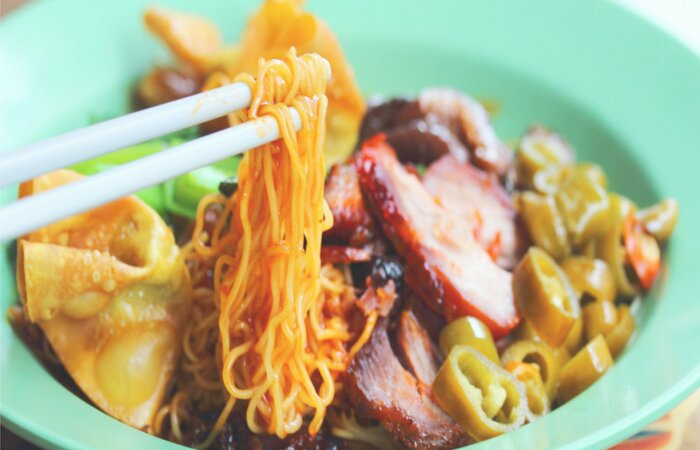

Nasi Lemak
Nasi lemak is a dish that comprises rice made fragrant with coconut cream and pandan leaves. It is believed to be Malay in origin, and traditionally accompanied by fried anchovies, sliced cucumbers, either fried chicken or fried fish, and a sweet chili sauce
Chicken Rice
The Hainanese chicken rice is a dish that consists of succulent steamed white chicken cut into bite-size pieces and served on fragrant rice with some light soy sauce.
Laksa

Laksa consists of thick wheat noodles or rice vermicelli with chicken, prawn or fish, served in spicy soup based on either rich and spicy curry coconut milk or on sour asam (tamarind or gelugur).
S'pore Breakfast

The most uniquely Singaporean breakfast is kaya toast. Kaya is a sort of jam made from coconut, egg and pandan leaves (which taste slightly like vanilla) and is served on toasted bread with a thick layer of margarine. It is traditionally accompanied by soft boiled eggs and either tea or coffee.
Wanton Mee
'Wanton mee' is a dish comprising of egg noodles served with Chinese barbecued pork, pickled green chillies, vegetables and a small bowl of soup with meat dumplings.
Chili Crab
Chilli crab is a popular seafood dish among locals and foreigners in Singapore, and consists of mud crabs deep-fried in a sweet, savoury and spicy gravy. It has been referred to in various food publications as Singapore's national seafood dish or even Singapore's national dish.
Char Kway Teow

Char Kway Teow is a dish of flat rice noodles and yellow wheat noodles fried in garlic, sweet soya sauce and lard, with ingredients such as egg, Chinese waxed sausage, fishcake, beansprouts and cockles.
Roti Prata

Roti Prata is a South-Indian flat bread made by frying stretched dough flavoured with ghee (Indian clarified butter), and usually served with fish or mutton curry.
Satay

Satay is a dish commonly found across Southeast Asia including Singapore. It consists of seasoned, skewered and grilled meat, usually served with a peanut based sauce.